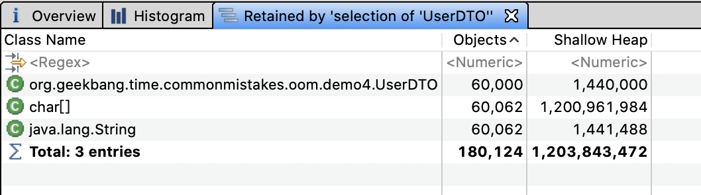
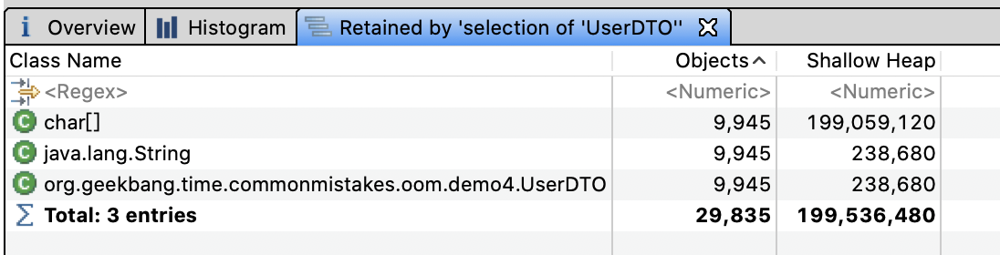
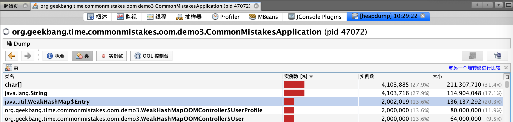
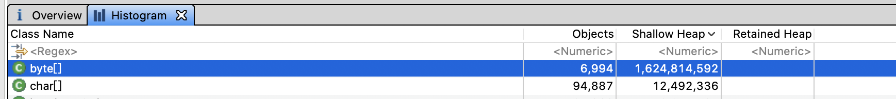
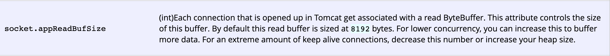

- 00 开篇词 业务代码真的会有这么多坑？.md.html
- 01 使用了并发工具类库，线程安全就高枕无忧了吗？.md.html
- 02 代码加锁：不要让“锁”事成为烦心事.md.html
- 03 线程池：业务代码最常用也最容易犯错的组件.md.html
- 04 连接池：别让连接池帮了倒忙.md.html
- 05 HTTP调用：你考虑到超时、重试、并发了吗？.md.html
- 06 2成的业务代码的Spring声明式事务，可能都没处理正确.md.html
- 07 数据库索引：索引并不是万能药.md.html
- 08 判等问题：程序里如何确定你就是你？.md.html
- 09 数值计算：注意精度、舍入和溢出问题.md.html
- 10 集合类：坑满地的List列表操作.md.html
- 11 空值处理：分不清楚的null和恼人的空指针.md.html
- 12 异常处理：别让自己在出问题的时候变为瞎子.md.html
- 13 日志：日志记录真没你想象的那么简单.md.html
- 14 文件IO：实现高效正确的文件读写并非易事.md.html
- 15 序列化：一来一回你还是原来的你吗？.md.html
- 16 用好Java 8的日期时间类，少踩一些“老三样”的坑.md.html
- 17 别以为“自动挡”就不可能出现OOM.md.html
- 18 当反射、注解和泛型遇到OOP时，会有哪些坑？.md.html
- 19 Spring框架：IoC和AOP是扩展的核心.md.html
- 20 Spring框架：框架帮我们做了很多工作也带来了复杂度.md.html
- 21 代码重复：搞定代码重复的三个绝招.md.html
- 22 接口设计：系统间对话的语言，一定要统一.md.html
- 23 缓存设计：缓存可以锦上添花也可以落井下石.md.html
- 24 业务代码写完，就意味着生产就绪了？.md.html
- 25 异步处理好用，但非常容易用错.md.html
- 26 数据存储：NoSQL与RDBMS如何取长补短、相辅相成？.md.html
- 27 数据源头：任何客户端的东西都不可信任.md.html
- 28 安全兜底：涉及钱时，必须考虑防刷、限量和防重.md.html
- 29 数据和代码：数据就是数据，代码就是代码.md.html
- 30 如何正确保存和传输敏感数据？.md.html
- 31 加餐1：带你吃透课程中Java 8的那些重要知识点（一）.md.html
- 32 加餐2：带你吃透课程中Java 8的那些重要知识点（二）.md.html
- 33 加餐3：定位应用问题，排错套路很重要.md.html
- 34 加餐4：分析定位Java问题，一定要用好这些工具（一）.md.html
- 35 加餐5：分析定位Java问题，一定要用好这些工具（二）.md.html
- 36 加餐6：这15年来，我是如何在工作中学习技术和英语的？.md.html
- 37 加餐7：程序员成长28计.md.html
- 38 加餐8：Java程序从虚拟机迁移到Kubernetes的一些坑.md.html
- 答疑篇：代码篇思考题集锦（一）.md.html
- 答疑篇：代码篇思考题集锦（三）.md.html
- 答疑篇：代码篇思考题集锦（二）.md.html
- 答疑篇：加餐篇思考题答案合集.md.html
- 答疑篇：安全篇思考题答案合集.md.html
- 答疑篇：设计篇思考题答案合集.md.html
- 结束语 写代码时，如何才能尽量避免踩坑？.md.html
- 捐赠
17 别以为“自动挡”就不可能出现OOM
今天，我要和你分享的主题是，别以为“自动挡”就不可能出现 OOM。
这里的“自动挡”，是我对 Java 自动垃圾收集器的戏称。的确，经过这么多年的发展，Java 的垃圾收集器已经非常成熟了。有了自动垃圾收集器，绝大多数情况下我们写程序时可以专注于业务逻辑，无需过多考虑对象的分配和释放，一般也不会出现 OOM。
但，内存空间始终是有限的，Java 的几大内存区域始终都有 OOM 的可能。相应地，Java 程序的常见 OOM 类型，可以分为堆内存的 OOM、栈 OOM、元空间 OOM、直接内存 OOM 等。几乎每一种 OOM 都可以使用几行代码模拟，市面上也有很多资料在堆、元空间、直接内存中分配超大对象或是无限分配对象，尝试创建无限个线程或是进行方法无限递归调用来模拟。
但值得注意的是，我们的业务代码并不会这么干。所以今天，我会从内存分配意识的角度通过一些案例，展示业务代码中可能导致 OOM 的一些坑。这些坑，或是因为我们意识不到对象的分配，或是因为不合理的资源使用，或是没有控制缓存的数据量等。
在第 3 讲介绍线程时，我们已经看到了两种 OOM 的情况，一是因为使用无界队列导致的堆 OOM，二是因为使用没有最大线程数量限制的线程池导致无限创建线程的 OOM。接下来，我们再一起看看，在写业务代码的过程中，还有哪些意识上的疏忽可能会导致 OOM。
太多份相同的对象导致 OOM
我要分享的第一个案例是这样的。有一个项目在内存中缓存了全量用户数据，在搜索用户时可以直接从缓存中返回用户信息。现在为了改善用户体验，需要实现输入部分用户名自动在下拉框提示补全用户名的功能（也就是所谓的自动完成功能）。
在第 10 讲介绍集合时，我提到对于这种快速检索的需求，最好使用 Map 来实现，会比直接从 List 搜索快得多。
为实现这个功能，我们需要一个 HashMap 来存放这些用户数据，Key 是用户姓名索引，Value 是索引下对应的用户列表。举一个例子，如果有两个用户 aa 和 ab，那么 Key 就有三个，分别是 a、aa 和 ab。用户输入字母 a 时，就能从 Value 这个 List 中拿到所有字母 a 开头的用户，即 aa 和 ab。
在代码中，在数据库中存入 1 万个测试用户，用户名由 a~j 这 6 个字母随机构成，然后把每一个用户名的前 1 个字母、前 2 个字母以此类推直到完整用户名作为 Key 存入缓存中，缓存的 Value 是一个 UserDTO 的 List，存放的是所有相同的用户名索引，以及对应的用户信息：
//自动完成的索引，Key是用户输入的部分用户名，Value是对应的用户数据
private ConcurrentHashMap<String, List<UserDTO>> autoCompleteIndex = new ConcurrentHashMap<>();
@Autowired
private UserRepository userRepository;
@PostConstruct
public void wrong() {
//先保存10000个用户名随机的用户到数据库中
userRepository.saveAll(LongStream.rangeClosed(1, 10000).mapToObj(i -> new UserEntity(i, randomName())).collect(Collectors.toList()));
//从数据库加载所有用户
userRepository.findAll().forEach(userEntity -> {
int len = userEntity.getName().length();
//对于每一个用户，对其用户名的前N位进行索引，N可能是1~6六种长度类型
for (int i = 0; i < len; i++) {
String key = userEntity.getName().substring(0, i + 1);
autoCompleteIndex.computeIfAbsent(key, s -> new ArrayList<>())
.add(new UserDTO(userEntity.getName()));
}
});
log.info("autoCompleteIndex size:{} count:{}", autoCompleteIndex.size(),
autoCompleteIndex.entrySet().stream().map(item -> item.getValue().size()).reduce(0, Integer::sum));
}
对于每一个用户对象 UserDTO，除了有用户名，我们还加入了 10K 左右的数据模拟其用户信息：
@Data
public class UserDTO {
private String name;
@EqualsAndHashCode.Exclude
private String payload;
public UserDTO(String name) {
this.name = name;
this.payload = IntStream.rangeClosed(1, 10_000)
.mapToObj(__ -> "a")
.collect(Collectors.joining(""));
}
}
运行程序后，日志输出如下：
[11:11:22.982] [main] [INFO ] [.t.c.o.d.UsernameAutoCompleteService:37 ] - autoCompleteIndex size:26838 count:60000
可以看到，一共有 26838 个索引（也就是所有用户名的 1 位、2 位一直到 6 位有 26838 个组合），HashMap 的 Value，也就是 List一共有 1 万个用户 *6=6 万个 UserDTO 对象。
使用内存分析工具 MAT 打开堆 dump 发现，6 万个 UserDTO 占用了约 1.2GB 的内存：

看到这里发现，虽然真正的用户只有 1 万个，但因为使用部分用户名作为索引的 Key，导致缓存的 Key 有 26838 个，缓存的用户信息多达 6 万个。如果我们的用户名不是 6 位而是 10 位、20 位，那么缓存的用户信息可能就是 10 万、20 万个，必然会产生堆 OOM。
尝试调大用户名的最大长度，重启程序可以看到类似如下的错误：
[17:30:29.858] [main] [ERROR] [ringframework.boot.SpringApplication:826 ] - Application run failed
org.springframework.beans.factory.BeanCreationException: Error creating bean with name 'usernameAutoCompleteService': Invocation of init method failed; nested exception is java.lang.OutOfMemoryError: Java heap space
我们可能会想当然地认为，数据库中有 1 万个用户，内存中也应该只有 1 万个 UserDTO 对象，但实现的时候每次都会 new 出来 UserDTO 加入缓存，当然在内存中都是新对象。在实际的项目中，用户信息的缓存可能是随着用户输入增量缓存的，而不是像这个案例一样在程序初始化的时候全量缓存，所以问题暴露得不会这么早。
知道原因后，解决起来就比较简单了。把所有 UserDTO 先加入 HashSet 中，因为 UserDTO 以 name 来标识唯一性，所以重复用户名会被过滤掉，最终加入 HashSet 的 UserDTO 就不足 1 万个。
有了 HashSet 来缓存所有可能的 UserDTO 信息，我们再构建自动完成索引 autoCompleteIndex 这个 HashMap 时，就可以直接从 HashSet 获取所有用户信息来构建了。这样一来，同一个用户名前缀的不同组合（比如用户名为 abc 的用户，a、ab 和 abc 三个 Key）关联到 UserDTO 是同一份：
@PostConstruct
public void right() {
...
HashSet<UserDTO> cache = userRepository.findAll().stream()
.map(item -> new UserDTO(item.getName()))
.collect(Collectors.toCollection(HashSet::new));
cache.stream().forEach(userDTO -> {
int len = userDTO.getName().length();
for (int i = 0; i < len; i++) {
String key = userDTO.getName().substring(0, i + 1);
autoCompleteIndex.computeIfAbsent(key, s -> new ArrayList<>())
.add(userDTO);
}
});
...
}
再次分析堆内存，可以看到 UserDTO 只有 9945 份，总共占用的内存不到 200M。这才是我们真正想要的结果。

修复后的程序，不仅相同的 UserDTO 只有一份，总副本数变为了原来的六分之一；而且因为 HashSet 的去重特性，双重节约了内存。
值得注意的是，我们虽然清楚数据总量，但却忽略了每一份数据在内存中可能有多份。我之前还遇到一个案例，一个后台程序需要从数据库加载大量信息用于数据导出，这些数据在数据库中占用 100M 内存，但是 1GB 的 JVM 堆却无法完成导出操作。
我来和你分析下原因吧。100M 的数据加载到程序内存中，变为 Java 的数据结构就已经占用了 200M 堆内存；这些数据经过 JDBC、MyBatis 等框架其实是加载了 2 份，然后领域模型、DTO 再进行转换可能又加载了 2 次；最终，占用的内存达到了 200M*4=800M。
所以，在进行容量评估时，我们不能认为一份数据在程序内存中也是一份。
使用 WeakHashMap 不等于不会 OOM
对于上一节实现快速检索的案例，为了防止缓存中堆积大量数据导致 OOM，一些同学可能会想到使用 WeakHashMap 作为缓存容器。
WeakHashMap 的特点是 Key 在哈希表内部是弱引用的，当没有强引用指向这个 Key 之后，Entry 会被 GC，即使我们无限往 WeakHashMap 加入数据，只要 Key 不再使用，也就不会 OOM。
说到了强引用和弱引用，我先和你回顾下 Java 中引用类型和垃圾回收的关系：
垃圾回收器不会回收有强引用的对象；
在内存充足时，垃圾回收器不会回收具有软引用的对象；
垃圾回收器只要扫描到了具有弱引用的对象就会回收，WeakHashMap 就是利用了这个特点。
不过，我要和你分享的第二个案例，恰巧就是不久前我遇到的一个使用 WeakHashMap 却最终 OOM 的案例。我们暂且不论使用 WeakHashMap 作为缓存是否合适，先分析一下这个 OOM 问题。
声明一个 Key 是 User 类型、Value 是 UserProfile 类型的 WeakHashMap，作为用户数据缓存，往其中添加 200 万个 Entry，然后使用 ScheduledThreadPoolExecutor 发起一个定时任务，每隔 1 秒输出缓存中的 Entry 个数：
private Map<User, UserProfile> cache = new WeakHashMap<>();
@GetMapping("wrong")
public void wrong() {
String userName = "zhuye";
//间隔1秒定时输出缓存中的条目数
Executors.newSingleThreadScheduledExecutor().scheduleAtFixedRate(
() -> log.info("cache size:{}", cache.size()), 1, 1, TimeUnit.SECONDS);
LongStream.rangeClosed(1, 2000000).forEach(i -> {
User user = new User(userName + i);
cache.put(user, new UserProfile(user, "location" + i));
});
}
执行程序后日志如下：
[10:30:28.509] [pool-3-thread-1] [INFO ] [t.c.o.demo3.WeakHashMapOOMController:29 ] - cache size:2000000
[10:30:29.507] [pool-3-thread-1] [INFO ] [t.c.o.demo3.WeakHashMapOOMController:29 ] - cache size:2000000
[10:30:30.509] [pool-3-thread-1] [INFO ] [t.c.o.demo3.WeakHashMapOOMController:29 ] - cache size:2000000
可以看到，输出的 cache size 始终是 200 万，即使我们通过 jvisualvm 进行手动 GC 还是这样。这就说明，这些 Entry 无法通过 GC 回收。如果你把 200 万改为 1000 万，就可以在日志中看到如下的 OOM 错误：
Exception in thread "http-nio-45678-exec-1" java.lang.OutOfMemoryError: GC overhead limit exceeded
Exception in thread "Catalina-utility-2" java.lang.OutOfMemoryError: GC overhead limit exceeded
我们来分析一下这个问题。进行堆转储后可以看到，堆内存中有 200 万个 UserProfie 和 User：

如下是 User 和 UserProfile 类的定义，需要注意的是，WeakHashMap 的 Key 是 User 对象，而其 Value 是 UserProfile 对象，持有了 User 的引用：
@Data
@AllArgsConstructor
@NoArgsConstructor
class User {
private String name;
}
@Data
@AllArgsConstructor
@NoArgsConstructor
public class UserProfile {
private User user;
private String location;
}
没错，这就是问题的所在。分析一下 WeakHashMap 的源码，你会发现 WeakHashMap 和 HashMap 的最大区别，是 Entry 对象的实现。接下来，我们暂且忽略 HashMap 的实现，来看下 Entry 对象：
private static class Entry<K,V> extends WeakReference<Object> ...
/**
* Creates new entry.
*/
Entry(Object key, V value,
ReferenceQueue<Object> queue,
int hash, Entry<K,V> next) {
super(key, queue);
this.value = value;
this.hash = hash;
this.next = next;
}
Entry 对象继承了 WeakReference，Entry 的构造函数调用了 super (key,queue)，这是父类的构造函数。其中，key 是我们执行 put 方法时的 key；queue 是一个 ReferenceQueue。如果你了解 Java 的引用就会知道，被 GC 的对象会被丢进这个 queue 里面。
再来看看对象被丢进 queue 后是如何被销毁的：
public V get(Object key) {
Object k = maskNull(key);
int h = hash(k);
Entry<K,V>[] tab = getTable();
int index = indexFor(h, tab.length);
Entry<K,V> e = tab[index];
while (e != null) {
if (e.hash == h && eq(k, e.get()))
return e.value;
e = e.next;
}
return null;
}
private Entry<K,V>[] getTable() {
expungeStaleEntries();
return table;
}
/**
* Expunges stale entries from the table.
*/
private void expungeStaleEntries() {
for (Object x; (x = queue.poll()) != null; ) {
synchronized (queue) {
@SuppressWarnings("unchecked")
Entry<K,V> e = (Entry<K,V>) x;
int i = indexFor(e.hash, table.length);
Entry<K,V> prev = table[i];
Entry<K,V> p = prev;
while (p != null) {
Entry<K,V> next = p.next;
if (p == e) {
if (prev == e)
table[i] = next;
else
prev.next = next;
// Must not null out e.next;
// stale entries may be in use by a HashIterator
e.value = null; // Help GC
size--;
break;
}
prev = p;
p = next;
}
}
}
}
从源码中可以看到，每次调用 get、put、size 等方法时，都会从 queue 里拿出所有已经被 GC 掉的 key 并删除对应的 Entry 对象。我们再来回顾下这个逻辑：
put 一个对象进 Map 时，它的 key 会被封装成弱引用对象；
发生 GC 时，弱引用的 key 被发现并放入 queue；
调用 get 等方法时，扫描 queue 删除 key，以及包含 key 和 value 的 Entry 对象。
WeakHashMap 的 Key 虽然是弱引用，但是其 Value 却持有 Key 中对象的强引用，Value 被 Entry 引用，Entry 被 WeakHashMap 引用，最终导致 Key 无法回收。解决方案就是让 Value 变为弱引用，使用 WeakReference 来包装 UserProfile 即可：
private Map<User, WeakReference<UserProfile>> cache2 = new WeakHashMap<>();
@GetMapping("right")
public void right() {
String userName = "zhuye";
//间隔1秒定时输出缓存中的条目数
Executors.newSingleThreadScheduledExecutor().scheduleAtFixedRate(
() -> log.info("cache size:{}", cache2.size()), 1, 1, TimeUnit.SECONDS);
LongStream.rangeClosed(1, 2000000).forEach(i -> {
User user = new User(userName + i);
//这次，我们使用弱引用来包装UserProfile
cache2.put(user, new WeakReference(new UserProfile(user, "location" + i)));
});
}
重新运行程序，从日志中观察到 cache size 不再是固定的 200 万，而是在不断减少，甚至在手动 GC 后所有的 Entry 都被回收了：
[10:40:05.792] [pool-3-thread-1] [INFO ] [t.c.o.demo3.WeakHashMapOOMController:40 ] - cache size:1367402
[10:40:05.795] [pool-3-thread-1] [INFO ] [t.c.o.demo3.WeakHashMapOOMController:40 ] - cache size:1367846
[10:40:06.773] [pool-3-thread-1] [INFO ] [t.c.o.demo3.WeakHashMapOOMController:40 ] - cache size:549551
...
[10:40:20.742] [pool-3-thread-1] [INFO ] [t.c.o.demo3.WeakHashMapOOMController:40 ] - cache size:549551
[10:40:22.862] [pool-3-thread-1] [INFO ] [t.c.o.demo3.WeakHashMapOOMController:40 ] - cache size:547937
[10:40:22.865] [pool-3-thread-1] [INFO ] [t.c.o.demo3.WeakHashMapOOMController:40 ] - cache size:542134
[10:40:23.779] [pool-3-thread-1] [INFO ]
//手动进行GC
[t.c.o.demo3.WeakHashMapOOMController:40 ] - cache size:0
当然，还有一种办法就是，让 Value 也就是 UserProfile 不再引用 Key，而是重新 new 出一个新的 User 对象赋值给 UserProfile：
@GetMapping("right2")
public void right2() {
String userName = "zhuye";
...
User user = new User(userName + i);
cache.put(user, new UserProfile(new User(user.getName()), "location" + i));
}
此外，Spring 提供的ConcurrentReferenceHashMap类可以使用弱引用、软引用做缓存，Key 和 Value 同时被软引用或弱引用包装，也能解决相互引用导致的数据不能释放问题。与 WeakHashMap 相比，ConcurrentReferenceHashMap 不但性能更好，还可以确保线程安全。你可以自己做实验测试下。
Tomcat 参数配置不合理导致 OOM
我们再来看看第三个案例。有一次运维同学反馈，有个应用在业务量大的情况下会出现假死，日志中也有大量 OOM 异常：
[13:18:17.597] [http-nio-45678-exec-70] [ERROR] [ache.coyote.http11.Http11NioProtocol:175 ] - Failed to complete processing of a request
java.lang.OutOfMemoryError: Java heap space
于是，我让运维同学进行生产堆 Dump。通过 MAT 打开 dump 文件后，我们一眼就看到 OOM 的原因是，有接近 1.7GB 的 byte 数组分配，而 JVM 进程的最大堆内存我们只配置了 2GB：

通过查看引用可以发现，大量引用都是 Tomcat 的工作线程。大部分工作线程都分配了两个 10M 左右的数组，100 个左右工作线程吃满了内存。第一个红框是 Http11InputBuffer，其 buffer 大小是 10008192 字节；而第二个红框的 Http11OutputBuffer 的 buffer，正好占用 10000000 字节：

我们先来看看第一个 Http11InputBuffer 为什么会占用这么多内存。查看 Http11InputBuffer 类的 init 方法注意到，其中一个初始化方法会分配 headerBufferSize+readBuffer 大小的内存：
void init(SocketWrapperBase<?> socketWrapper) {
wrapper = socketWrapper;
wrapper.setAppReadBufHandler(this);
int bufLength = headerBufferSize +
wrapper.getSocketBufferHandler().getReadBuffer().capacity();
if (byteBuffer == null || byteBuffer.capacity() < bufLength) {
byteBuffer = ByteBuffer.allocate(bufLength);
byteBuffer.position(0).limit(0);
}
}
在Tomcat 文档中有提到，这个 Socket 的读缓冲，也就是 readBuffer 默认是 8192 字节。显然，问题出在了 headerBufferSize 上：

向上追溯初始化 Http11InputBuffer 的 Http11Processor 类，可以看到，传入的 headerBufferSize 配置的是 MaxHttpHeaderSize：
inputBuffer = new Http11InputBuffer(request, protocol.getMaxHttpHeaderSize(),
protocol.getRejectIllegalHeaderName(), httpParser);
Http11OutputBuffer 中的 buffer 正好占用了 10000000 字节，这又是为什么？通过 Http11OutputBuffer 的构造方法，可以看到它是直接根据 headerBufferSize 分配了固定大小的 headerBuffer：
protected Http11OutputBuffer(Response response, int headerBufferSize){
...
headerBuffer = ByteBuffer.allocate(headerBufferSize);
}
那么我们就可以想到，一定是应用把 Tomcat 头相关的参数配置为 10000000 了，使得每一个请求对于 Request 和 Response 都占用了 20M 内存，最终在并发较多的情况下引起了 OOM。
果不其然，查看项目代码发现配置文件中有这样的配置项：
server.max-http-header-size=10000000
翻看源码提交记录可以看到，当时开发同学遇到了这样的异常：
java.lang.IllegalArgumentException: Request header is too large
于是他就到网上搜索了一下解决方案，随意将 server.max-http-header-size 修改为了一个超大值，期望永远不会再出现类似问题。但，没想到这个修改却引起了这么大的问题。把这个参数改为比较合适的 20000 再进行压测，我们就可以发现应用的各项指标都比较稳定。
这个案例告诉我们，一定要根据实际需求来修改参数配置，可以考虑预留 2 到 5 倍的量。容量类的参数背后往往代表了资源，设置超大的参数就有可能占用不必要的资源，在并发量大的时候因为资源大量分配导致 OOM。
重点回顾
今天，我从内存分配意识的角度和你分享了 OOM 的问题。通常而言，Java 程序的 OOM 有如下几种可能。
一是，我们的程序确实需要超出 JVM 配置的内存上限的内存。不管是程序实现的不合理，还是因为各种框架对数据的重复处理、加工和转换，相同的数据在内存中不一定只占用一份空间。针对内存量使用超大的业务逻辑，比如缓存逻辑、文件上传下载和导出逻辑，我们在做容量评估时，可能还需要实际做一下 Dump，而不是进行简单的假设。
二是，出现内存泄露，其实就是我们认为没有用的对象最终会被 GC，但却没有。GC 并不会回收强引用对象，我们可能经常在程序中定义一些容器作为缓存，但如果容器中的数据无限增长，要特别小心最终会导致 OOM。使用 WeakHashMap 是解决这个问题的好办法，但值得注意的是，如果强引用的 Value 有引用 Key，也无法回收 Entry。
三是，不合理的资源需求配置，在业务量小的时候可能不会出现问题，但业务量一大可能很快就会撑爆内存。比如，随意配置 Tomcat 的 max-http-header-size 参数，会导致一个请求使用过多的内存，请求量大的时候出现 OOM。在进行参数配置的时候，我们要认识到，很多限制类参数限制的是背后资源的使用，资源始终是有限的，需要根据实际需求来合理设置参数。
最后我想说的是，在出现 OOM 之后，也不用过于紧张。我们可以根据错误日志中的异常信息，再结合 jstat 等命令行工具观察内存使用情况，以及程序的 GC 日志，来大致定位出现 OOM 的内存区块和类型。其实，我们遇到的 90% 的 OOM 都是堆 OOM，对 JVM 进程进行堆内存 Dump，或使用 jmap 命令分析对象内存占用排行，一般都可以很容易定位到问题。
这里，我建议你为生产系统的程序配置 JVM 参数启用详细的 GC 日志，方便观察垃圾收集器的行为，并开启 HeapDumpOnOutOfMemoryError，以便在出现 OOM 时能自动 Dump 留下第一问题现场。对于 JDK8，你可以这么设置：
XX:+HeapDumpOnOutOfMemoryError -XX:HeapDumpPath=. -XX:+PrintGCDateStamps -XX:+PrintGCDetails -Xloggc:gc.log -XX:+UseGCLogFileRotation -XX:NumberOfGCLogFiles=10 -XX:GCLogFileSize=100M
今天用到的代码，我都放在了 GitHub 上，你可以点击这个链接查看。
思考与讨论
Spring 的 ConcurrentReferenceHashMap，针对 Key 和 Value 支持软引用和弱引用两种方式。你觉得哪种方式更适合做缓存呢？
当我们需要动态执行一些表达式时，可以使用 Groovy 动态语言实现：new 出一个 GroovyShell 类，然后调用 evaluate 方法动态执行脚本。这种方式的问题是，会重复产生大量的类，增加 Metaspace 区的 GC 负担，有可能会引起 OOM。你知道如何避免这个问题吗？
针对 OOM 或内存泄露，你还遇到过什么案例吗？我是朱晔，欢迎在评论区与我留言分享，也欢迎你把今天的内容分享给你的朋友或同事，一起交流。
© 2019 - 2023 Liangliang Lee. Powered by gin and hexo-theme-book.